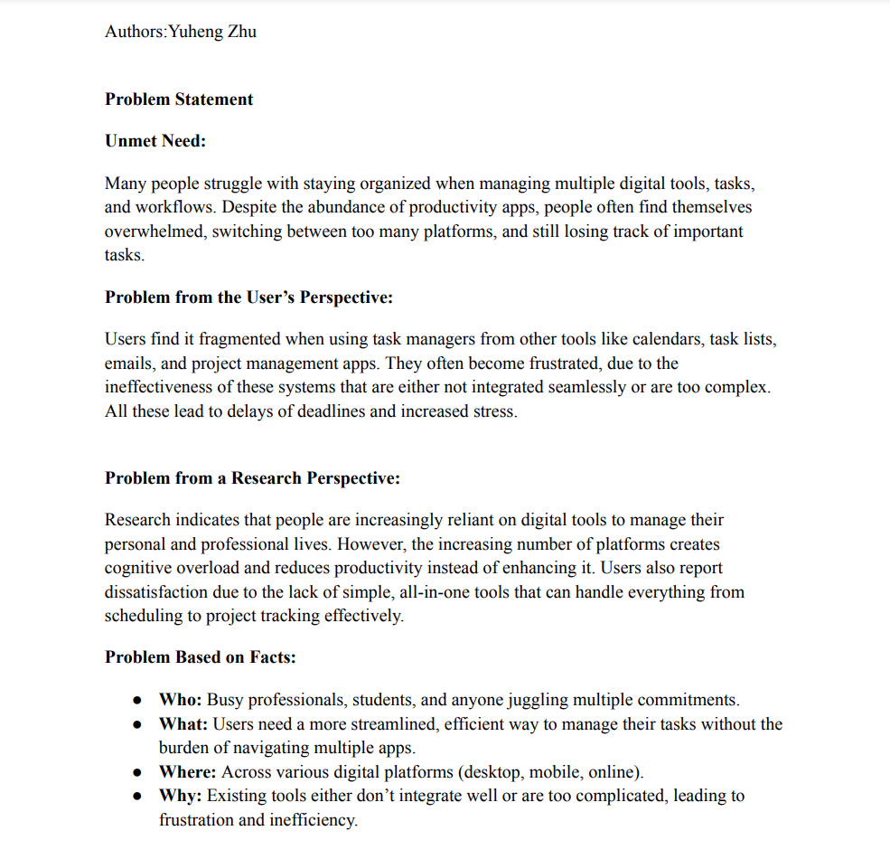

Welcome to my portfolio!
Hi, I'm Yuheng Zhu, a passionate student at UofSC. I'm currently pursuing a degree in CIS. I enjoy coding, learning about new technologies, and building cool projects. I'm always eager to tackle new challenges and grow as a developer.

This is a detailed problem statement about digital tools and task management inefficiencies. You can view the full document by clicking the link below.
Download Problem Statement PDFEmail: yuheng@email.sc.edu